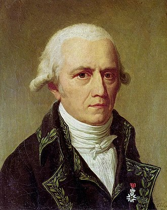
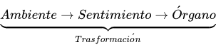

Jean-Baptiste Lamarck
Jean-Baptiste-Pierre-Antoine de Monet, caballero de Lamarck (Bazentin; 1 de agosto de 1744 - París; 18 de diciembre de 1829) fue un naturalista francés, uno de los grandes hombres de la época de la sistematización de la historia natural, cercano en su influencia a Linneo, Leclerc y Cuvier.
Lamarck formuló la primera teoría de la evolución biológica, en 1802 acuñó el término «biología» para designar la ciencia de los seres vivos y fue el fundador de la paleontología de los invertebrados.
La biología como ciencia
Lamarck reclama para la biología la necesidad de una filosofía propia:
«Sabemos que cualquier ciencia debe tener su filosofía y que solo por ese camino hay progresos reales. Los naturalistas gastarán vanamente su tiempo describiendo nuevas especies, captando nuevos matices, todas las pequeñas particularidades de sus variaciones para agrandar la inmensa lista de las especies inscritas [...] Si la filosofía de la ciencia se descuida, sus progresos no serán reales y la obra entera quedará imperfecta.»
Philosophia Zoológica, pp. 69-70
Lamarck distingue entre universo (conjunto de la materia) y naturaleza (orden de cosas particular y constante). Esta distinción general es paralela a la establecida entre hechos y relaciones: para Lamarck no sólo es necesaria la observación y estudio de los hechos y objetos, sino también de sus partes, las relaciones entre estas y las relaciones de los objetos con los demás y de todos ellos con su entorno. El naturalista ha de estar siempre atento para que las leyes que postula no procedan de la imaginación, sino de la realidad empírica. Su trabajo ha de consistir en observar y recopilar los hechos y, por vía de sucesivas inducciones, abstraer con rigor lógico las leyes que los explican del modo más amplio y consistente.
Clasificación de los seres vivos
La clasificación lamarckiana se basa en criterios funcionales. El sistema nervioso central es el punto de partida, pues a partir de su centralización y complejidad progresiva puede construirse la cadena de los seres. Así, Lamarck clasifica a los animales en tres grandes grupos: aquellos dotados de irritabilidad (invertebrados inferiores), aquellos que poseen además el «sentimiento interior» (invertebrados superiores) y aquellos que revelan inteligencia y voluntad (vertebrados).
Naturaleza y origen de la vida
Para Lamarck, la vida es un fenómeno natural consistente en un modo peculiar de organización de la materia. En este sentido, considera que los organismos vivos están formados por los mismos elementos y las mismas fuerzas físicas que componen la materia inanimada; los reinos animal y vegetal sólo difieren, por tanto, del reino mineral por el modo de organización interna de los mismos elementos (HNASV).
A partir de su concepto de vida, Lamarck radica en la generación espontánea, todavía en debate en aquella época, el mecanismo de su origen: el movimiento de la materia provocado por la acción de las fuerzas de la naturaleza es capaz de generar de manera espontánea a los organismos vivos más sencillos. A partir de ellos, la naturaleza continúa su tendencia al progresivo incremento de complejidad a medida que cada organismo va siendo sustituido por otros dotados de más órganos y facultades. Valiéndose también de la generación espontánea para explicar la coexistencia temporal de organismos de distinto grado de complejidad.
Teoría de la evolución (lamarckismo o transformismo)
Lamarck formuló la primera teoría de la evolución. Propuso que la gran variedad de organismos, que en aquel tiempo se aceptaba que eran formas estáticas creadas por Dios, habían evolucionado desde formas simples; postulando que los protagonistas de esa evolución habían sido los propios organismos por su capacidad de adaptarse al ambiente: los cambios en ese ambiente generaban nuevas necesidades en los organismos, y esas nuevas necesidades conllevarían una modificación de los mismos que sería heredable.
Se apoyó para la formulación de su teoría en la existencia de restos de formas intermedias extintas. Con su teoría se enfrentó a la creencia general por la que todas las especies habían sido creadas y permanecían inmutables desde su creación. También se enfrentó al influyente Cuvier que justificó la desaparición de especies, no porque fueran formas intermedias entre las primigenias y las actuales, sino porque se trataba de formas de vida diferentes, extinguidas en los diferentes cataclismos geológicos sufridos por la Tierra.
La teoría de Lamarck es una teoría sobre la evolución de la vida, no sobre su origen, que, en aquel entonces, se aceptaba, surgía espontáneamente en sus formas más simples. Sería 50 años después cuando Pasteur demostrara que todo proceso de fermentación y descomposición orgánica se debe a la acción de organismos vivos y que el crecimiento de los microorganismos en caldos nutritivos no era debido a la generación espontánea. Lamarck tuvo que esbozar su teoría en un tiempo en el que el estado de las ciencias naturales era “caótico”, "formuladas en una época en que ni siquiera se podía entrever la posibilidad lejana de fundarlas sobre hechos evidentes".
«El estado caótico del conocimiento en torno a los fósiles, la anatomía y la taxonomía antes del evolucionismo, la pregunta: “¿Cómo es que a nadie se le ocurrió antes pensar en el evolucionismo?” se convierte en “¿Cómo es posible que a alguien se le ocurriera pensar en el evolucionismo?”.»
Leon Harris
Para Lamarck, la observación de la naturaleza, donde los organismos se encuentran perfectamente adaptados al ambiente en el que se desarrollan, llevaba a la siguiente alternativa: o los organismos fueron creados con todas las adaptaciones a todos los ambientes existentes en la Tierra y estos ambientes no habían cambiado desde sus orígenes, como se aceptaba entonces; o los organismos se adaptaban a estos ambientes y por consiguiente iban modificando su estructura conforme el ambiente iba cambiando, como él proponía.
Lamarck, al tiempo que formuló la evolución de la vida, propuso un mecanismo por el que ésta evolucionaría. Para Lamarck la naturaleza habría obrado mediante "tanteos": "Con relación a los cuerpos vivientes, la Naturaleza ha procedido por tanteos y sucesivamente", y su teoría podría sintetizarse en: las circunstancias crean la necesidad, esa necesidad crea los hábitos, los hábitos producen las modificaciones como resultado del uso o desuso de determinado órgano y los medios de la Naturaleza se encargan de fijar esas modificaciones. Describió esta evolución como consecuencia de seis puntos:
- Todos los cuerpos organizados (organismos) de la Tierra han sido producidos por la naturaleza sucesivamente y después de una enorme sucesión de tiempo.
- En su marcha constante, la Naturaleza ha comenzado, y recomienza aún todos los días, por formar los cuerpos organizados más simples, y que no forman directamente más que estos. Es decir, que estos primeros bosquejos de organismos son los que se han designado con el nombre de generaciones espontáneas.
- Estando formados los primeros bosquejos del animal y del vegetal han desarrollado poco a poco los órganos y con el tiempo se han diversificado.
- La facultad de reproducción inherente en cada organismo ha dado lugar a los diferentes modos de multiplicación y de regeneración de los individuos. Por ello los progresos adquiridos se han conservado.
- Con la ayuda de un tiempo suficiente, de las circunstancias, de los cambios surgidos en la Tierra, de los diferentes hábitos que ante nuevas situaciones los organismos han tenido que mantener, surge la diversidad de estos.
- Los cambios en su organización y de sus partes, lo que se llama especie, han sido sucesiva é insensiblemente formados. Por lo que la especie no tiene más que una constancia relativa en su estado y no puede ser tan antigua como la Naturaleza.
Formuló dos leyes:
Así, para llegar a conocer las verdaderas causas de tantas formas diversas y de tantos hábitos diferentes como nos ofrecen los animales, es preciso considerar que las circunstancias infinitamente diversificadas, en las cuales se han encontrado los seres de cada raza, han producido para cada uno de ellos necesidades nuevas y cambios en sus hábitos necesariamente. Reconocida esta verdad, que nadie podrá negar, será fácil percibir cómo las nuevas necesidades han podido ser satisfechas y los nuevos hábitos adquiridos, si se presta alguna atención a las dos siguientes leyes de la Naturaleza, que siempre ha comprobado la observación:
Primera ley: en todo animal que no ha traspasado el término de sus desarrollos, el uso frecuente y sostenido de un órgano cualquiera lo fortifica poco a poco, dándole una potencia proporcionada a la duración de este uso, mientras que el desuso constante de tal órgano le debilita y hasta lo hace desaparecer.
Segunda ley: todo lo que la Naturaleza hizo adquirir o perder a los individuos por la influencia de las circunstancias en que su raza se ha encontrado colocada durante largo tiempo, y consecuentemente por la influencia del empleo predominante de tal órgano, o por la de su desuso, la Naturaleza lo conserva por la generación en los nuevos individuos, con tal de que los cambios adquiridos sean comunes a los dos sexos, o a los que han producido estos nuevos individuos.
Lamarck, con estas leyes, sostuvo que si una “raza” (esto es, un grupo de organismos) estaba sometida a las mismas condiciones ambientales y estas condiciones se prolongarán durante mucho tiempo, se transformaría adaptándose a ese ambiente. Como mecanismo, propuso que las transformaciones que los organismos sufrimos en vida sometidos a los diferentes ambientes, con el tiempo se fijarían en su descendencia, lo que hoy conocemos como transferencia horizontal.
Advirtió que ese proceso es un proceso tan lento que desde nuestra capacidad de observación pasaría inadvertido. Según estas leyes los cambios se producen no en el individuo sino en la población (no en uno o varios individuos, sino en el conjunto de individuos del grupo) y no son cambios inmediatos sino que se fijarían a lo largo de un prolongado proceso.
«Las variaciones en las circunstancias para los seres vivientes, y sobre todo para los animales, producen cambios en sus necesidades, en sus hábitos y en el modo de existir, y si estos cambios dan lugar a modificaciones o desarrollos en los órganos o en la forma de sus partes, se debe inducir que insensiblemente todo cuerpo viviente cualquiera debe variar en sus formas o sus caracteres exteriores, aunque semejantes variaciones no llegasen a ser sensibles más que después de un tiempo considerable. […] En cada lugar donde los seres pueden habitar, las circunstancias que establecen en él un orden de cosas permanecen largo tiempo siendo las mismas y no cambian en realidad más que con una lentitud tan grande, que el hombre no puede advertirse directamente. Está obligado a consultar los monumentos para reconocer que en cada uno de aquellos lugares el orden de cosas establecido no ha sido siempre el mismo. Las razas de animales que viven en cada uno de ellos deben conservar en él largo tiempo sus hábitos. De aquí para nosotros la aparente constancia de las razas que llamamos especies, constancia que hizo nacer en nuestro pensamiento la idea de que las razas son tan antiguas como la Naturaleza.»
Las ideas de Lamarck no fueron tomadas en cuenta en su época, aunque su libro Filosofía zoológica, donde plasmó su teoría, circuló por Francia y también por Inglaterra, obra a la que tuvo acceso el propio Darwin.
Fue después de formulada la teoría de la selección natural cuando los evolucionistas retomaron el pensamiento de Lamarck intentando suplir el vacío que la selección natural dejaba al no explicar la fuente de la variabilidad sobre la que tal selección actuaba. El propio Darwin, al tiempo que denostaba la teoría de Lamarck, intentó cubrir ese vacío postulando la “pangénesis”, un mecanismo de transferencia horizontal lamarkiano. Y sería a principios del siglo xx cuando Weismann lo refutara con la formulación de la conocida como “barrera Weismann” por la que se consideraba que existiendo dos líneas, la germinal y la somática, no cabría la posibilidad de transferencia de información entre la una y la otra. Malinterpretando a Lamarck desarrolló un experimento que supuestamente refutaba su teoría: cortó el rabo a sucesivas generaciones de ratones para demostrar que sus descendientes no nacían con el rabo cortado.
Desde entonces, el Lamarckismo se ha simplificado con argumentos que vienen a caricaturizar: «En pueblos donde el herrero hereda el oficio de su padre, su abuelo y su abuelo, se pensaba que heredaba también unos músculos bien desarrollados. sólo los heredaba sino que los desarrollaba más con el ejercicio, y pasaba estas mejoras a su hijo». Ya en vida, Lamarck se tendría que defender de argumentos parecidos:
No obstante, se objeta todavía que todo lo que se ve anuncia, relativamente al estado de los cuerpos vivientes, una constancia inalterable en la conservación de su forma, y se piensa que todos los animales cuyo recuerdo nos ha transmitido la historia resaltan siempre los mismos y no han perdido ni adquirido nada en el perfeccionamiento de sus órganos y en la forma de sus partes.
«No se puede por menos —dicen los autores— contener los vuelos de la imaginación, cuando todavía se ve conservado con sus menores huesos, sus menores pelos y sus menores detalles tal animal que antes tenía en Tobas o en Menfis sacerdotes y altares. Pero sin extraviarnos en todas las ideas que hacen nacer semejantes aproximaciones, limítese a exponer que estos animales son perfectamente semejantes a los actuales»
Anales del Museo de Historia Natural.
«No se puede por menos —dicen los autores— contener los vuelos de la imaginación, cuando todavía se ve conservado con sus menores huesos, sus menores pelos y sus menores detalles tal animal que antes tenía en Tobas o en Menfis sacerdotes y altares. Pero sin extraviarnos en todas las ideas que hacen nacer semejantes aproximaciones, limítese a exponer que estos animales son perfectamente semejantes a los actuales»
Durante el siglo xx el lamarckismo ha sido defendido por diferentes evolucionistas, y el conocido como “efecto Baldwin” (enunciado por James Marck Baldwin y C. Loyd Morgan a finales del siglo xix), una versión edulcorada del lamarckismo según la cual los hábitos sostenidos de las especies, por selección natural, se fijarían en la herencia, se mantiene como plausible para resolver algunas dificultades del neodarwinismo.
Avanzado el siglo xx, la “barrera Weismann” se ha mostrado franqueable, sin poderse probar que los caracteres adquiridos no puedan llegar a ser heredables. La transferencia horizontal se ha demostrado en casos, y se ve en los virus, con su capacidad de intercambio genético, a los posibles actores de tales transferencias. También, en la simbiosis, se ha demostrado la existencia de transferencia genética, y en su grado de máxima integración, la simbiogénesis, ha demostrado la eclosión de nuevas individualidades, quimeras que integran a sus simbiontes. El paso de procariotas a eucariotas, descrito en la endosimbiosis seriada, fue consecuencia de estos procesos simbiogenéticos; aunque Mayr y Maynard Smith en los años 90 opinaban que estos procesos nada tienen que ver con el Lamarckismo. Gould (1977) diría: Dudo que el lamarckismo pueda volver a experimentar un resurgimiento como teoría viable de la evolución
.
Al día de hoy, en mayoría, la comunidad científica considera el paradigma neodarwinista satisfactorio para explicar la evolución biológica, no considerando válido el lamarckismo. No obstante, Lynn Margulis, entre otras y otros, considera que «una sugerencia principal para el nuevo siglo en biología es que el difamado eslogan del lamarckismo, "la herencia de los caracteres adquiridos" no debe ser todavía abandonado: tan sólo debe ser refinado cuidadosamente».